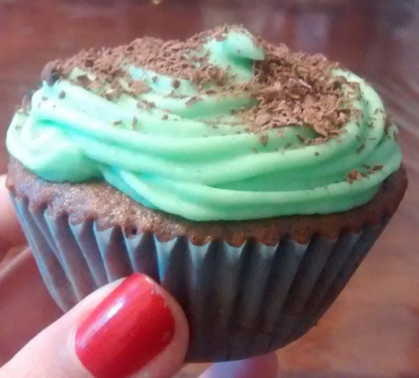

- 200gr de harina 0000
- 40gr de cacao amargo
- 15gr de polvo de hornear
- 150gr de azucar
- 55gr de manteca
- 55ml de aceite de girasol
- 1 huevo
- 175ml de leche
- 100gr de chocolate
- Esencia de vainilla c/n

- Prender el horno a 180ºC.
- Mezclar la harina, el polvo de hornear y el cacao.
- Mezclar en otro bowl la manteca, el azucar, el huevo y la esencia de vainilla.
- Tamizar los ingredientes secos e integrar. Agregar la leche y el aceite e integrar.
- Agregar el chocolate picado o cortado en trozos. Integrar.
- Llenar los pirotines y hornear por 25 a 30 minutos a 180ºC, o hasta que esten cocidos (comprobandolos con un palito de brochette).
- Dejar reposar.